原文出处:本文由博客园博主Winner192提供。
原文连接:https://www.cnblogs.com/winner192/p/11798353.html
原文连接:https://www.cnblogs.com/winner192/p/11798353.html
-
确定短信运营商
我这里采用的云片，不过大家使用其它的也可以。
- 首先自己注册一个帐号，然后找到这个
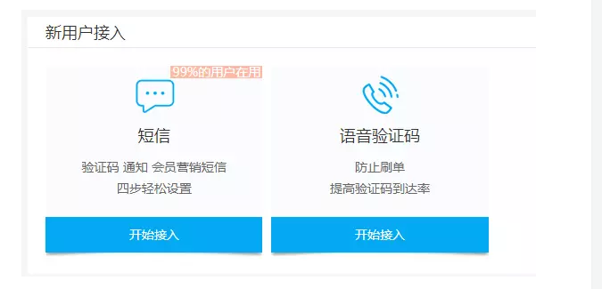
- 点击开始接入，完成新手引导过程。
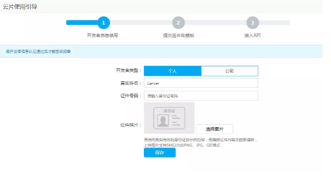
- 第二部的签名和模板必须填写，类似我下面填写的这样
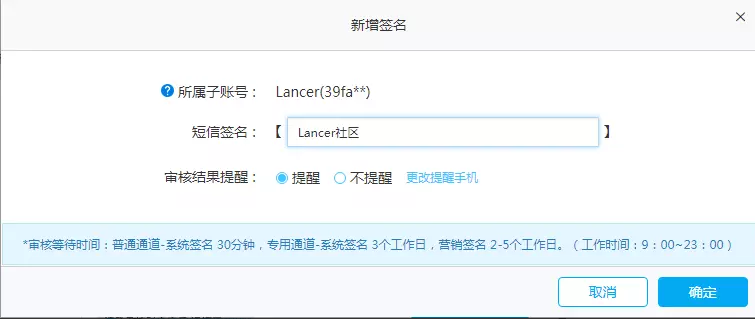
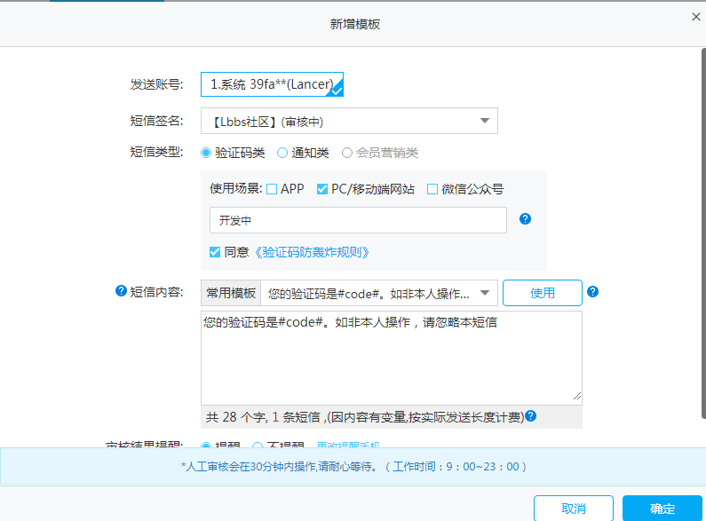
值得注意的是这个模板必须和你到时候用 easy-sms 包的时候，设定的短信内容必须和这个一模一样，不然会报错。
还有就是记得一定得拿到APIKEY。在env里进行接口调用的配置。
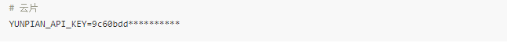
2. 安装easy-sms包
- 利用这个包，可以快速的实现短信发送功能。
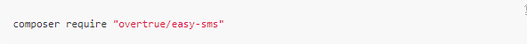
由于该组件还没有 Laravel 的 ServiceProvider，为了方便使用，我们可以自己封装一下。
- 首先在 config 目录中增加
easysms.php文件
在 config/easysms.php 填写如下内容。
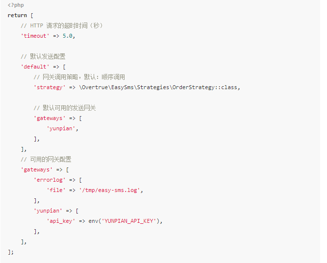
然后创建一个 ServiceProvider
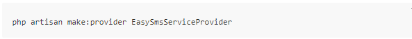
修改文件 app/providers/EasySmsServiceProvider.php
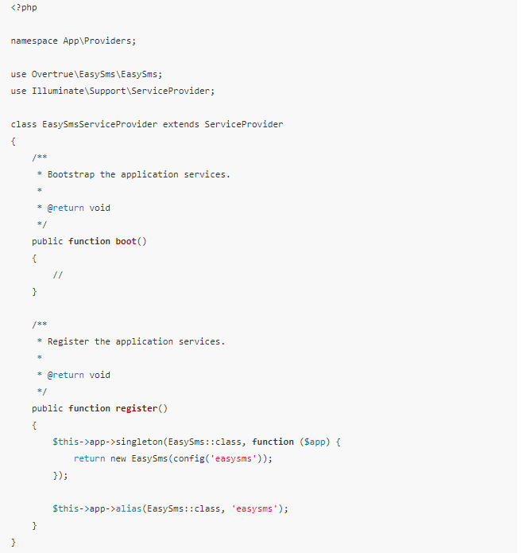
最后在config/app.php在providers里增加刚刚创建的服务写进去，App\Providers\EasySmsServiceProvider::class,
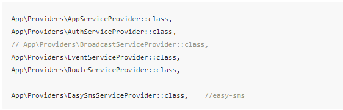
3. 创建路由和对应的控制器
首先创建路由，我们需要一个ajax请求短信验证码的方法，和一个进行确认注册的逻辑方法，如下

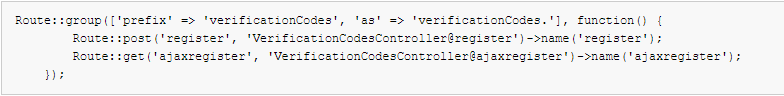
路由创建好后，直接用命令生成controller了
再直接在里面写register和ajaxregister方法了
- 代码逻辑
修改文件
app/Home/VerificationCodesController.php
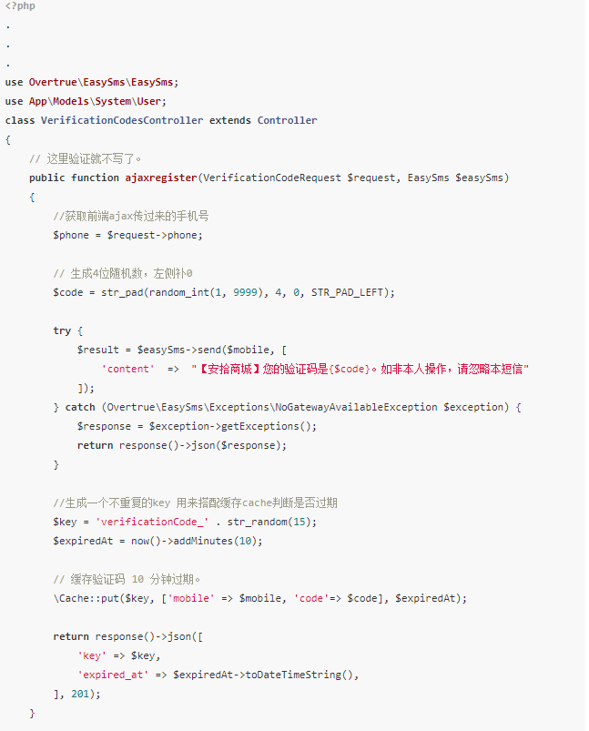
这时，用户就能收到短信，并且前端应该保存这个key，提交注册表单的时候传递给后台，判断是否已经过期。下面就是判断是否过期，验证码是否错误。
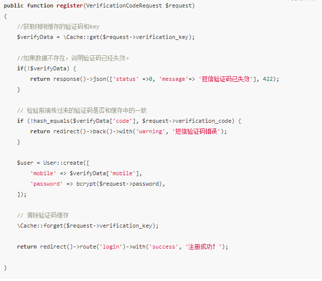
上面的hash_equals 是可防止时序攻击的字符串比较的~